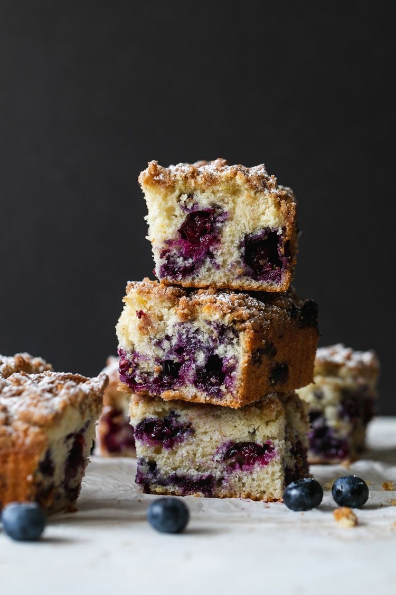

* Expert tip: Preheat the oven before you begin with the ingredients prep.
Ingredients
For the cake
2 cups blueberries
2 cups of all purpose flour
Zest of 1/2 a lemon
1/2 teaspoon salt
6 tablespoons salted butter, softened to room temperature
3/4 cup granulated sugar
1 large egg, room temperature
2 teaspoons vanilla extract
2 tablespoons plain Greek yogurt
1/2 cups whole milk
1 tablespoon all purpose flour
Optional: powdered sugar for dusting
For the crumb topping
4 tablespoons salted butter, melted and cooled
3 tablespoons granulated sugar
2 tablespoons brown sugar
1 teaspoon cinnamon
pinch of salt
1/2 cup all purpose flour

Instructions
Preheat the oven to 375℉. Spray an 8x8 square baking pan with nonstick spray, and line with parchment paper for easy
removal. Set aside
Combine your dry ingredients. in a medium bowl, whisk together the flour, baking powder, salt, and lemon zest. Set
aside.
Add the softened butter to the bowl of a stand mixer. Cream the butter on medium-high speed for 1-2 minutes, then add
the sugar and continue to cream the butter and sugar together for another 2 minutes, or until light and fluffy, scraping
down the sides as needed. Add the vanilla and Greek yogurt and beat until combined. Lower the speed and add the milk,
gradually, until the mixture comes together.
On low speed, gradually add the dry ingredients to the wet, mixing until just combined. Be careful not to overmix
In a separate bowl, toss the blueberries with the tablespoon of flour until lightly coated. Gently fold the blueberries
into the batter. Transfer the batter to the prepared pan, smoothing out the top with a rubber spatula until even. Batter
will be thick
In a small bowl, make the crumble topping. Whisk together the melted butter, granulated sugar, brown sugar, cinnamon,
and pinch of salt until smooth. Add the flour and whisk together until mixture forms something resembling wet sand.
Using your fingertips, crumble the topping evenly over the surface of the batter. Bake for 40-45 minutes, or until the
crumble topping is golden brown, the center of the cake is set, and a toothpick inserted into the center of the cake
comes out clean.
Let the cake cool completely, then remove from pan, and cut into 9 squares. Finish with a generous dusting of powdered
sugar, and viola!!
Best served with a scoop of vanilla ice-cream
Feeling stuck? No worries, press play and follow the steps in the video >>>
Share your creation on Instagram using the #OhSoSweet tag and stand a chance to WIN a SMEG MIXER | Competition ends 23rd September 2023.